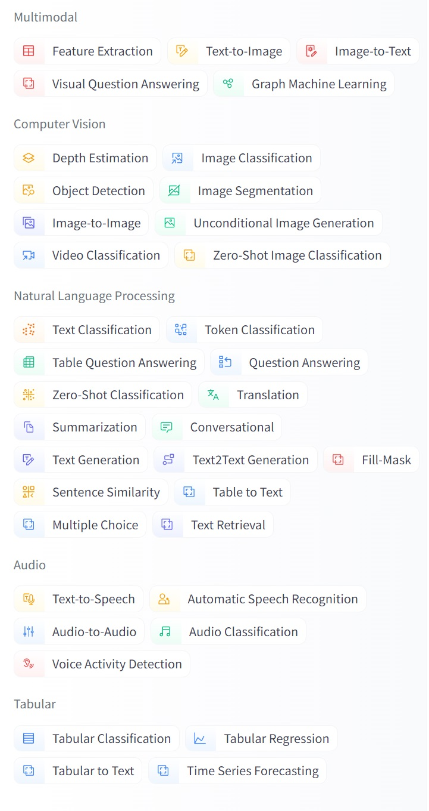
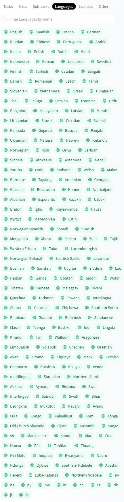
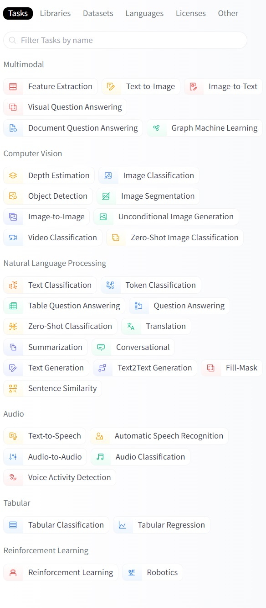
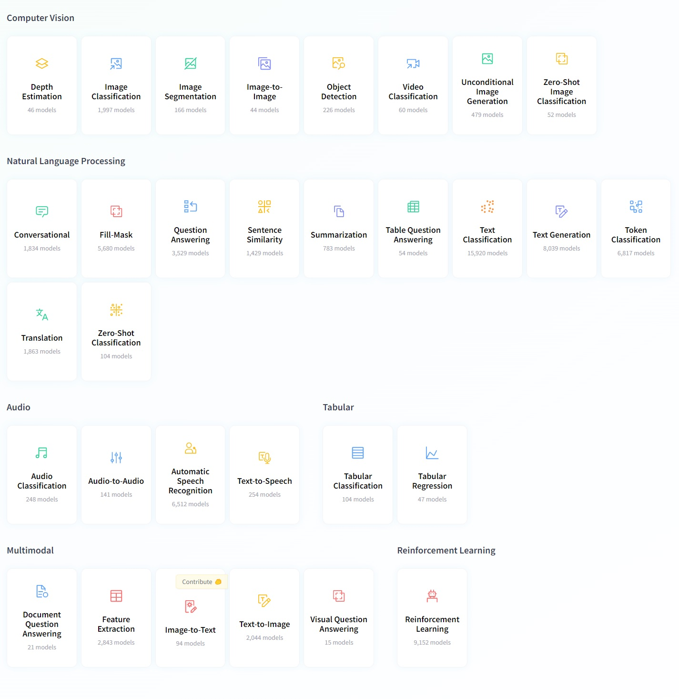

T4. Centralización de datasets y modelos: Huggingface
Contents
T4. Centralización de datasets y modelos: Huggingface#
Contenidos:
Tecnologías de Generción (Copilot, ChatGPT)
Introducción#
Huggingface.co una compañía centrada en el PLN la cual ha desarrollado las librerías Transformers, centralizado datasets y ha creado modelos de aprendizaje pre-entrenados disponibles a través de sus librerías de programación. Las librerías de Huggingface actualmente dan soporte a empresas muy importantes del mercado tecnológico. Ver https://huggingface.co/.
Repositorio de Datasets#
Proporciona conjuntos de datos para muchas tareas de PLN como clasificación de texto, respuesta a preguntas, modelado de lenguaje, etc.
Instalación de librería de manipulación de datasets
Para la instalación de la librería de manipulación de datasets se debe ejecutar la siguiente instrucción pip:
>>> pip install datasets
Para asegurarnos de que Transformers dataset se ha instalado correctamente es necesario ejecutar la siguiente instrucción:
>>> python -c "from datasets import load_dataset; print(load_dataset('squad', split='train')[0])"
Esta instrucción debe descargar la versión 1 del conjunto de datos de respuesta a preguntas de Stanford, cargar su división de entrenamiento e imprimir el primer ejemplo de entrenamiento de la siguiente manera:
{'id': '5733be284776f41900661182', 'title': 'University_of_Notre_Dame', 'context': 'Architecturally, the school has a Catholic character. Atop the Main Building\'s gold dome is a golden statue of the Virgin Mary. Immediately in front of the Main Building and facing it, is a copper statue of Christ with arms upraised with the legend "Venite Ad Me Omnes"...', 'question': 'To whom did the Virgin Mary allegedly appear in 1858 in Lourdes France?', 'answers': {'text': array(['Saint Bernadette Soubirous'], dtype=object), 'answer_start': array([515], dtype=int32)}}
Listar datasets disponibles en el repositorio#
Para listar los conjuntos de datos disponibles es necesario ejecutar la siguiente función datasets.list_datasets () que pertenece a la clase datasets.
>>> from datasets import list_datasets
>>> datasets_list = list_datasets()
>>> len(datasets_list)
656
>>> print(', '.join(dataset for dataset in datasets_list))
aeslc, ag_news, ai2_arc, allocine, anli, arcd, art, billsum, blended_skill_talk, blimp, blog_authorship_corpus, bookcorpus, boolq, break_data,
c4, cfq, civil_comments, cmrc2018, cnn_dailymail, coarse_discourse, com_qa, commonsense_qa, compguesswhat, coqa, cornell_movie_dialog, cos_e,
cosmos_qa, crime_and_punish, csv, definite_pronoun_resolution, discofuse, docred, drop, eli5, empathetic_dialogues, eraser_multi_rc, esnli,
event2Mind, fever, flores, fquad, gap, germeval_14, ghomasHudson/cqc, gigaword, glue, …
Otra alternativa es:
Ir a la web https://huggingface.co
Seleccionar el menú Datasets: https://huggingface.co/datasets
Filtrar por categoría, idioma, tarea y/o licencia
¿Cómo cargar datasets?#
Haciendo uso de la función load_dataset se nos permite recuperar cualquier dataset registrado en el repositorio. Por ejemplo, el dataset MRPC que ha sido proporcionado en el índice de referencia GLUE (https://gluebenchmark.com/leaderboard).
>>> from datasets import load_dataset
>>> dataset = load_dataset('glue', 'mrpc', split='train')
O podemos ver otro ejemplo como el de eHealth-KD
>>> from datasets import load_dataset
>>> dataset = load_dataset("ehealth_kd")
No obstante, la librería datasets permite además cargar conjuntos de datos propios que no formen parte del repositorio. Por ejemplo:
>>> from datasets import load_dataset
>>> dataset = load_dataset('csv', data_files='my_file.csv')
Para más detalles sobre las distintas funciones y parámetros permitidos para manipular datasets ver la siguiente documentación:
Categorías, tareas e idiomas de datasets#
Categorías: En este repositorio podemos encontrar un amplio catalogo de categorías por las cuales filtrar y y especificar el tipo de dateset que estamos buscando. Hemos de resaltar que estos datasets existen originalmente en diferentes formatos, nos obstante en una vez incluido en este repositorio, el formato es estandar. Por tal motivo, a través de las librías de manipulación (las mencionadas enteriormente) que ofrece Huggingface, podemos acceder a ellos y gestionarlos.
{kind=link}
Figura 1. Categorías filtro de datasets
Más de 134 tareas y más de 194 idiomas:
{kind=link}
Figura 2. Tareas e idiomas filtro datasets
Repositorio de Modelos pre-entrenados#
La biblioteca de Transformers permite el uso de modelos previamente entrenados para tareas de Comprensión del lenguaje natural (NLU), i.e. como analizar el sentimiento de un texto, y Generación del lenguaje natural (NLG), i.e. como completar un mensaje con texto nuevo o traducir a otro idioma. A groso modo listamos los modelos que nos podemos encontrar
Análisis de sentimiento: Conocer si un texto es positivo o negativo
Generación de texto (en inglés): proporcionar un mensaje para el cual el modelo generará un texto.
Reconocimiento de entidades nombradas (NER): Dado en una oración de entrada se etiqueta cada palabra con la entidad que esta representa (persona, lugar, organización, etc.)
Respuesta a preguntas: Teniendo en cuenta un modelo de un contexto determinado, dado un pregunta se obtiene una respuesta.
Relleno de texto con máscara: Dado un texto con palabras enmascaradas (p. Ej., Reemplazado por [MÁSCARA]), completar los espacios en blanco.
Resumen: Generación de un resumen a partir de texto extenso.
Traducción: Traducción de un texto a otro idioma.
Extracción de características: Obtener una representación tensorial del texto. Tomado de https://huggingface.co/transformers/quicktour.html
Listado de tareas tal y como las podemos encontrar en el repositorio: El listado de tareas, como categorías, en las que podemos filtar los distintos modelos preentrenados que ofrece el repositorio Huggingface, es igual de amplio que el de los datasets.
{kind=link}
Figura 3. Tareas filtro modelos
Idiomas para los que se han entrenado los modelos: El listado de idiomas,como categorías, en las que podemos filtar los distintos modelos preentrenados que ofrece el repositorio Huggingface, es igual de amplio que el de los datasets.

Figura 4. Idiomas filtro modelos
Una explicación detallada sobre cada una de estas tareas y ejemplos de uso con Huggingface Transformer la podemos encontrar en el siguiente enlace:
Huggingface a partir de 2022 A mediados de 2022 esta plataforma federativa da un paso agigantado expandiendo datasets y modelos preentrenados de solo ofrecer recursos para la modalidad de Procesamiento del Lenguaje Natural, a ofrecer recursos Multimodales, Visión por Computadora, Procesamiento de Audio, Procesamiento de datos Tabulares y para Aprendisaje por reforzamiento.
En la mayoría de los casos se ofrece una ejemplo de uso y documentación. Poner en marcha cualquiera de estas tareas, reajustando o no los modelos prentrenados que se ofrecen en esta plataforma, se encuentra bien documentado y ejemplificado en ella: Ver Categorías https://huggingface.co/tasks
{kind=link}
Figura 5. Categorías de documentaciones agrupadas por tareas y modalidades
!!!!!!!!!!!!!!!!!HASTA AQUI!!!!!!!!!!!!!!!!!
Ejemplo de Análisis de Sentimientos con Huggingface Transformer:
>>> from transformers import pipeline
>>> classifier = pipeline('sentiment-analysis')
>>> classifier('We are very happy to show you the ü§ó Transformers library.')
[{'label': 'POSITIVE', 'score': 0.9997795224189758}]
Si os fijáis hemos cargado un modelo pre-entrenado a través del pipeline sentiment-analysis para utilizarlo como clasificador. Este modelo se puede reentrenar a escenarios específicos si queremos realizando un ajuste sobre un nuevo corpus. Para más detalles ver la clase práctica bloque3_p3_SA-Transformers-Training-FineTuning
Si queremos que el pipeline sea multilingue, podemos indicar el modelo exacto que contemple un diccionario de este tipo y el pipeline lo ensamblará internamente. Mirad el siguiente ejemplo:
>>> from transformers import pipeline
>>> classifier = pipeline('sentiment-analysis', model='nlptown/bert-base-multilingual-uncased-sentiment' )
>>> classifier('Estoy muy triste')
[{'label': '1 star', 'score': 0.7241697907447815}]
Para otras tareas como Rellenado de Máscaras podemos ver como podemos simplemente indicar el tipo de tarea para que el pipeline seleccione el tipo de configuración más adecuada a esta y el modelo que queremos aplicarle. Con solo cambiar el modelo base podemos hacer esta tarea unilingue a multilingue o cambiar de idioma. Ver el ejemplo a continuación:
>>> from transformers import AutoModelWithLMHead, AutoTokenizer
>>> model = AutoModelWithLMHead.from_pretrained('mrm8488/RuPERTa-base')
>>> tokenizer = AutoTokenizer.from_pretrained("mrm8488/RuPERTa-base", do_lower_case=True)
>>> from transformers import pipeline
>>> pipeline_fill_mask = pipeline("fill-mask", model=model, tokenizer=tokenizer)
>>> pipeline_fill_mask("España es un país muy <mask> en la UE")
[{'score': 0.19951821863651276,
'sequence': 'España es un país muy importante en la UE',
'token': 1560,
'token_str': ' importante'},
{'score': 0.04137842729687691,
'sequence': 'España es un país muy grande en la UE',
'token': 2741,
'token_str': ' grande'},
{'score': 0.029216745868325233,
'sequence': 'España es un país muy pequeño en la UE',
'token': 2948,
'token_str': ' pequeño'},
{'score': 0.02563760057091713,
'sequence': 'España es un país muy popular en la UE',
'token': 5782,
'token_str': ' popular'},
{'score': 0.022264542058110237,
'sequence': 'España es un país muy antiguo en la UE',
'token': 5240,
'token_str': ' antiguo'}]
Listado de Pipelines#
En Huggingface podemos encontrar una serie de Pipelines ya preparados para enfrentar tareas concretas a los cuales les podemos suministrar distintos modelos y tokenizadores transformes. Ver ejemplos: https://huggingface.co/transformers/main_classes/pipelines.html
¿Cómo buscar y reutilizar modelos pre-entrenados en la plataforma?#
A continuación, se listan los pasos a seguir:
Dirigirse al repositorio https://huggingface.co/
Seleccionar el menú
modelsque nos llevará a https://huggingface.co/modelsFiltrar el listado de modelos según la tarea, idioma, librería (Pytorch o TensorFlow), dataset sobre el que fue entrenado, o licencia. Por ejemplo: tarea
Text Classification; idiomaes.Elegir un modelo de la lista. Por ejemplo:
bert-base-multilingual-uncased-sentimentObtendremos la documentación necesaria para utilizar el modelo.
Conociendo el nombre del modelo a utilizar entonces podemos hacer uso de este a través de la librería Transformer. En la propia documentación se aporta el código de ejemplo para hacer uso del modelo y en algunos casos una interfaz para probarlo:
from transformers import AutoTokenizer, AutoModelForSequenceClassification
tokenizer = AutoTokenizer.from_pretrained("nlptown/bert-base-multilingual-uncased-sentiment") # cargando el toquenizador basado en el modelo preentrenado
model = AutoModelForSequenceClassification.from_pretrained("nlptown/bert-base-multilingual-uncased-sentiment") # cargando del modelo preentrenado
Configuraciones de modelos trasnformers#
Los modelos pre-entrenados que se brindan en el repositorio se basan en alguna de las arquitecturas Transformers descrita en la documentación del repositorio (https://huggingface.co/docs). Si tomamos como referencia la arquitectura de modelo Transformer DistilBERT podemos conocer cómo gestionar los distintos parámetros, configuraciones de red neuronal, tokenizador y ejemplos documentados para cada tipo de tarea, tal y como podemos encontrar en el siguiente enlace (https://huggingface.co/course/chapter7/).
>>> # !pip install transformers
>>> from transformers import DistilBertTokenizer, DistilBertModel
>>> import torch
>>> tokenizer = DistilBertTokenizer.from_pretrained('distilbert-base-uncased') # cargando de toquenizador basado en el modelo preentrenado
>>> model = DistilBertModel.from_pretrained('distilbert-base-uncased') # cargando el modelo preentrenado
>>> inputs = tokenizer("Hello, my dog is cute", return_tensors="pt")
>>> outputs = model(**inputs)
>>> last_hidden_states = outputs.last_hidden_state
>>> print(last_hidden_states)
tensor([[[-1.8296e-01, -7.4054e-02, 5.0267e-02, ..., -1.1261e-01,
4.4493e-01, 4.0941e-01],
[ 7.0631e-04, 1.4825e-01, 3.4328e-01, ..., -8.6039e-02,
6.9475e-01, 4.3353e-02],
[-5.0721e-01, 5.3086e-01, 3.7163e-01, ..., -5.6287e-01,
1.3756e-01, 2.8475e-01],
...,
[-4.2251e-01, 5.7314e-02, 2.4338e-01, ..., -1.5223e-01,
2.4462e-01, 6.4155e-01],
[-4.9384e-01, -1.8895e-01, 1.2641e-01, ..., 6.3241e-02,
3.6913e-01, -5.8252e-02],
[ 8.3269e-01, 2.4948e-01, -4.5440e-01, ..., 1.1998e-01,
-3.9257e-01, -2.7785e-01]]], grad_fn=<NativeLayerNormBackward>)
Es importante conocer que las configuraciones de modelos Transformer ya cuentan con modelos base pre-entrenados. En el caso de DistilBERT podemos encontrar distilbert-base-uncased.
Tecnologías de generación#
GPT#
GPT significa “Generative Pretrained Transformer”. Es un modelo de lenguaje que utiliza técnicas de deep learning para generar texto de manera autónoma. GPT ha sido entrenado en una amplia cantidad de contenido textual.
GPT-1: Es la primera versión de GPT, con solo 117 millones de parámetros. Aunque es significativamente más limitada que las versiones posteriores, aún es capaz de generar texto aceptable en muchos contextos.
GPT-2: Es la segunda versión de GPT, con solo 1.5 mil millones de parámetros. Es capaz de generar texto coherente y a menudo convincente.
GPT-3: Es la tercera versión de GPT y es uno de los modelos de lenguaje más grandes y avanzados jamás entrenados. Tiene más de 175 mil millones de parámetros, lo que le permite generar texto muy convincente en una amplia variedad de contextos.
Además de estas versiones, también existen variantes más pequeñas de GPT para diferentes usos, como GPT-3 Lite y GPT-2 Medium. Cada una de estas variantes tiene un tamaño y capacidad diferente, lo que las hace más adecuadas para diferentes aplicaciones y escenarios.
A continuación se muestra un ejemplo de uso de GPT2:
import torch
from transformers import GPT2Tokenizer, GPT2LMHeadModel
# Inicializa el tokenizador
tokenizer = GPT2Tokenizer.from_pretrained('gpt2')
# Inicializa el modelo
model = GPT2LMHeadModel.from_pretrained('gpt2')
# Define el prompt
prompt = "Escribe un ejemplo sobre la importancia de la inteligencia artificial"
# Tokeniza el prompt
input_ids = tokenizer.encode(prompt, return_tensors='pt')
# Marca el fin de la entrada
input_ids = input_ids[:, -1].unsqueeze(0)
# Activamos el modelo en modo evaluación
model.eval()
# Generamos el texto
with torch.no_grad():
outputs = model(input_ids, labels=input_ids)
loss, logits = outputs[:2]
logits = logits[0, -1, :]
probs = torch.nn.functional.softmax(logits, dim=-1)
next_token_id = torch.argmax(probs).unsqueeze(0)
input_ids = torch.cat([input_ids, next_token_id], dim=-1)
# Convertimos los ids a texto
generated_text = tokenizer.decode(input_ids[0].tolist())
# Imprimimos el resultado
print(generated_text)
Copilot#
Es asistente de inteligencia artificial diseñado para ayudar enel completamiento de código mediante el uso de la conversación natural. Copilot utiliza modelos de lenguaje avanzados para comprender tus necesidades y brindarte la información y la ayuda que necesitas. Puedes interactuar con Copilot en una variedad de plataformas y dispositivos, incluyendo mensajería, aplicaciones de chat, aplicaciones de escritorio y más.
Copilot está diseñado para ayudarte a realizar una amplia gama de tareas y responder preguntas de forma eficiente y precisa. Algunos ejemplos de las tareas que puedes realizar con Copilot incluyen:
Consultar información sobre el clima, la hora actual y otras condiciones meteorológicas.
Obtener información sobre eventos actuales, noticias y tendencias.
Realizar búsquedas en línea y encontrar información sobre temas específicos.
Programar recordatorios y citas.
Obtener recomendaciones de restaurantes, películas y otras formas de entretenimiento.
Traducir palabras y frases a otros idiomas.
Obtener información sobre la bolsa de valores, la tasa de cambio y otras cotizaciones financieras.
Resolver problemas matemáticos y responder preguntas sobre conceptos científicos y tecnológicos.
Copilot está diseñado para ayudarte a realizar muchas tareas cotidianas y responder preguntas de una manera conveniente y rápida.
ChatGPT#
Es un modelo de lenguaje entrenado utilizando una gran cantidad de texto en internet. Se trata de una tecnología de procesamiento del lenguaje natural que permite a los usuarios interactuar con el modelo mediante el uso de conversaciones naturales.
Algunas de las funcionalidades más destacadas incluyen:
Responder preguntas: ChatGPT puede responder preguntas sobre una amplia gama de temas, incluyendo historia, geografía, ciencias, tecnología y mucho más.
Completar oraciones o fragmentos de texto: ChatGPT puede utilizar el contexto y la información previa para completar oraciones o fragmentos de texto de manera eficiente.
Generación de texto: ChatGPT puede generar texto en una variedad de formatos, como descripciones de productos, reseñas de películas y mucho más.
Traducción de idiomas: ChatGPT puede traducir palabras y frases a otros idiomas, lo que lo hace ideal para aquellos que desean comunicarse en un idioma distinto al suyo.
Resumen de texto: ChatGPT puede resumir grandes cantidades de texto en una forma concisa y fácil de entender.
Análisis de sentimientos: ChatGPT puede analizar el contenido de un texto para determinar el sentimiento que se expresa en él, como por ejemplo si es positivo, negativo o neutral.
En la web oficial de OpenAI podemos ver un amplio listado de ejemplos de aplicaciones de esta tecnología:
Q&A
Corrección gramtical
Resumir un texto
Traducir un texto complejo en un simple concepto.
Llamadas a APIs para usar técnicas de PLN
Generar comandos de programación a partir de instrucciones en lenguaje natural
Traducción automática
Generar codificación de programación: para llamar APIs, sentencias SQL, estructuras de programación, etc., desde instrucciones en lenguaje natural
Crear tabulaciones a àrtir de texto
Separar contenido no estructurado
Tareas de clasificación.
Extracción de categorías implícitas en textos
Generar descripciones y explicaciones a partir de códigos Python
Convertir el título de una película en un emoji
Hallar la complejidad computacional de una función
Traducir de un lenguaje de programación a otro
Detección de sentimientos para un fragmento de texto.
Explicar una pieza complicada de código.
Extraer palabras clave de un bloque de texto.
Convertir la descripción de un producto en un texto publicitario.
Generador de nombres de productos
Solucionar de errores de Python
Encontrar y corregir errores en el código fuente.
Crear de hojas de cálculo
Responder preguntas de JavaScript
Responder preguntas sobre modelos de lenguaje
Crear una lista de elementos para un tema determinado.
Extracción de información
Crear microhistorias
Convertir texto en de tercera persona
Generar esquemas para un tema.
Conversación abierta con un asistente de IA.
Bibliografía#
[1] https://huggingface.co/ [] https://openai.com/blog/chatgpt/